全部
VALORANT
英雄联盟
CS2
王者荣耀
B站数据
其他
← 返回首页
关于赛事分析工坊
赛事分析工坊是一个专注于电竞赛事深度分析的个人内容平台，覆盖 VALORANT (VCT)、英雄联盟 (LOL)、CS2、王者荣耀 (KPL) 等主流电竞项目。
内容方向
战术分析： 版本 Meta 解读、英雄/装备选取率趋势、战队战术风格对比数据可视化： 用图表说话——胜率、选取率、经济数据、选手个人数据赛事复盘： 关键系列赛的回合级拆解、经济博弈分析、战术决策解读行业观察： 赛事体系梳理、赛区战术偏好差异、版本变迁对生态的影响
数据来源
所有分析基于公开数据源：HLTV、vlr.gg、gol.gg、Leetify、拳头游戏官方补丁说明、5EPlay 等。图表均使用 Python (matplotlib) 生成。
一、改动概述：V社在7月16日做了什么
2025年7月16日，CS2 V1.45.0上线。这个补丁的时机极其微妙——IEM 科隆 2025开赛前一周。V社选择在年度最重要的超级精英赛事之一前夕推出重大平衡性更新，等于强制所有参赛队伍在一个半月的窗口期里完成对新版本的适应与战术重构。
本次更新涉及三方面改动，但真正改变游戏底层逻辑的只有一条：竞技模式中，CT阵营每消灭一名T方玩家，全队每名成员均可获得$50团队奖励（无论该回合胜负）。
也就是说，CT方每完成一次击杀，团队总收入增加$250（5人 × $50）。这笔钱独立于传统的个人击杀奖励（步枪$300/人）和回合胜负奖金，是一笔全新的、叠加的经济来源。
同时发布的另外两项改动也对经济系统有不小的影响：
燃烧弹火焰扩散速度加快——CT专属道具（T方为燃烧瓶），间接加强了CT的区域控制和回防能力；
MP9后坐力增加、跳跃精度大幅降低——MP9是CT方第三热门武器，此项削弱对CT有一定对冲作用。
此外，地图池变更（Overpass替换Anubis）也为分析增加了变量，但后续数据证明，CT胜率提升是全地图普遍现象，而非仅限于Overpass这一张CT倾向图。
二、经济建模：50美元的数学账
2.1 单回合收益
CS的经济系统是回合制资源博弈。我们简单计算CT方在新规则下的经济增量：
场景 CT击杀数 个人击杀奖励 新增团队奖励 团队总增量
完美防守（全歼） 5 $1,500 $1,250 +$1,250 正常交换 3 $900 $750 +$750 劣势防守 2 $600 $500 +$500 仅拿到1个击杀 1 $300 $250 +$250 零换五惨败 0 $0 $0 0
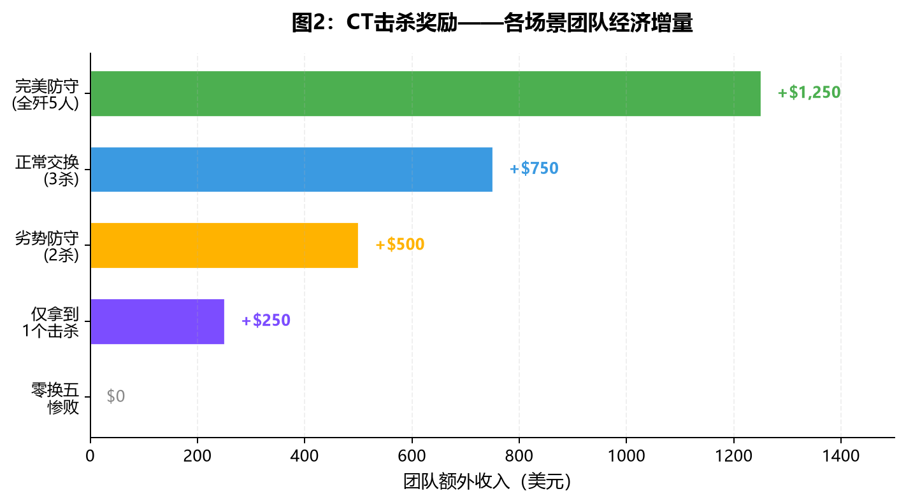
图2：CT击杀奖励——各场景团队经济增量（数据来源：CS2 Version 1.45.0 补丁说明）
关键在于：这笔额外收入不受回合胜负影响。旧系统中，CT方在输掉的回合里除了连败补偿外几乎零收入；新系统下，即使输掉回合，只要完成了击杀，就有持续的经济积累。
2.2 半场累积效应
职业比赛中，CT方半场平均击杀数约在30-40次之间（取决于地图和对手强度）。以平均值35次计算：35次击杀 × $250/次 = $8,750 额外团队收入，分摊到5名玩家 = 每人多出 $1,750。$1,750是什么概念？一把M4A1售价$2,900。这笔额外收入相当于每人多了大半把步枪，或者每人多了一套全道具配置（烟$300 + 燃烧弹$500 + 闪光$200 + HE$300 = $1,300）外加一把沙漠之鹰（$700）。
职业选手zont1x的评价很中肯："本质上你在一两回合内只能拿到一点小奖金。但如果计算更新前后半场的总经济，就会发现明显差异。到第10回合时，可能就会多出来一把枪。"
2.3 关键经济节点变化
这个改动最深刻的影响在于打缓和了CT方的经济压力。在以往版本中，CT方输掉手枪局后面临典型的"经济断崖"：
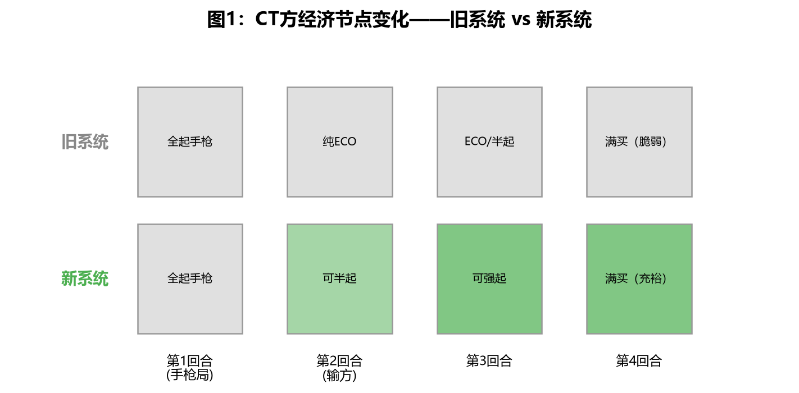
图1：CT方经济节点变化——旧系统 vs 新系统
回合 旧系统CT状况 新系统CT状况
第1回合（手枪局） 全起手枪 全起手枪（相同） 第2回合（输方） 纯ECO，几乎无道具 若手枪局拿到3杀，全队多$750，可半起 第3回合 继续ECO或半起 累计2回合击杀奖励，可强起 第4回合 首次全起，但经济脆弱 全起且有道具冗余
数据证实了这一点：据统计，更新后CT方第2回合全枪率从38%飙升至67%——这意味着超过2/3的回合，CT方在第2回合就能全队配备步枪，而旧版本中这一比例不到四成。
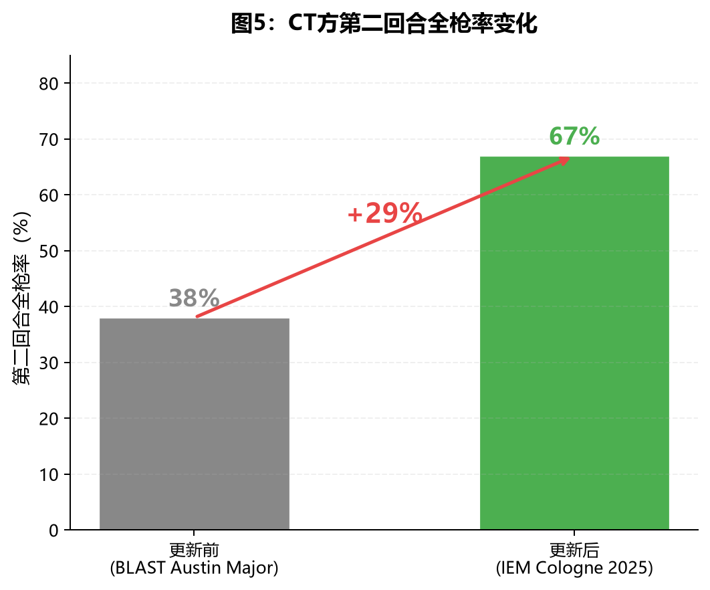
图5：CT方第二回合全枪率变化（数据来源：Leetify 统计）
三、胜率剧变：从数据看CT方崛起
截至8月底，已有115张职业比赛地图在更新后完成。虽然样本量相对今年上半年的708张地图不算大，但趋势已经极其明确：
3.1 各地图CT胜率变化
地图 更新前CT胜率 更新后CT胜率 变化幅度
Train 52.3% 61.0% +8.7% Ancient 49.3% 58.4% +9.1% Nuke 52.5% 57.6% +5.1% Mirage 50.7% 54.8% +4.1% Dust2 46.3% 52.2% +5.9% Inferno 49.2% 50.6% +1.4%
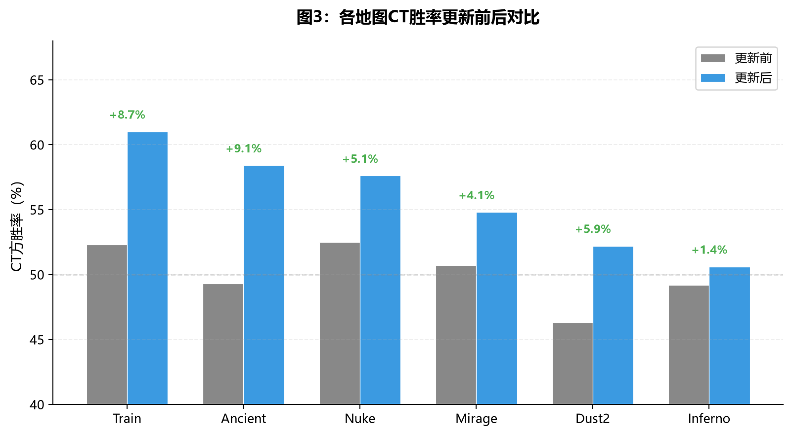
图3：各地图CT胜率更新前后对比（数据来源：travena.gg / Leetify 统计，更新前708张地图，更新后115张地图）
我们发现：所有6张地图CT胜率均上涨，无一例外。这排除了地图池变更的干扰——如果是Overpass替换Anubis导致的，变化应该集中在特定地图上；其中Ancient和Train涨幅最大（+9.1%和+8.7%），这两张地图的共同特点是CT方有大量交叉火力点和近距离交火区域，更容易获取击杀，因此50美元奖励的累积效应更强；Inferno涨幅最小（+1.4%），因为Inferno本身就是CT方通过道具和时间消耗取胜的地图，击杀密度相对较低，且T方香蕉道控制的时间较长，限制了CT的击杀机会；Dust2从CT劣势图变为CT均势图（46.3%→52.2%），这张传统T方优势图被"拉平"了。
3.2 IEM 科隆 2025地图数据
作为更新后首个S级赛事，IEM 科隆 2025（7月29日-8月3日）提供了最直接的实战样本：
地图 出场次数 T方胜率 CT方胜率
Inferno 23 52.3% 47.7% Nuke 20 38.9% 61.1% Ancient 20 45.9% 54.1% Mirage 19 47.0% 53.0% Dust2 15 45.7% 54.3% Train 10 40.1% 59.9% Overpass 7 45.8% 54.2%
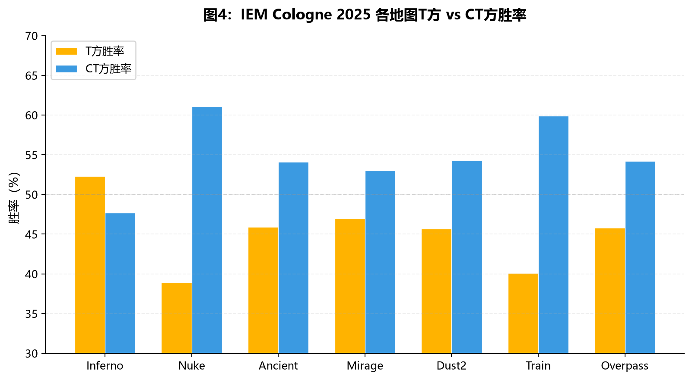
图4：IEM 科隆 2025 各地图T方 vs CT方胜率（数据来源：HLTV IEM 科隆 2025 统计）
科隆站的数据进一步印证了更新后的趋势：除了Inferno仍保持轻微T方优势外，其余6张地图CT方胜率均超过53%，Nuke和Train甚至逼近60%。（更新后统计的的115张地图仍远小于更新前的708张。部分地图如仅10场的Train、仅7场的Overpass的统计意义有限。但这已经足以说明问题。）
四、连锁反应：购买行为与武器生态
经济系统的改动不仅影响胜率，更从根本上改变了CT方的配枪模式。
4.1 M4使用率上升，MP9份额被挤占
更新后，用M4完成的击杀占比从22%-23%上升至25%，增长了约2个百分点。这个看似微小的数字背后是一个清晰的因果链：CT方经济更充裕 → 更频繁地购买M4而非MP9/FAMAS → M4击杀占比上升 → MP9使用率下降。
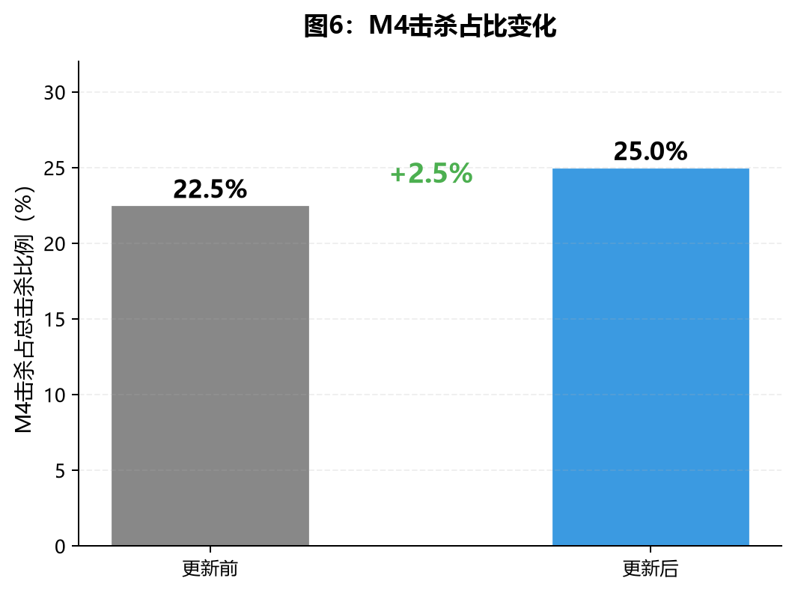
图6：M4击杀占比变化（数据来源：Leetify 武器使用统计）
MP9本应受到经济改善的利好（它是强起局的首选），但补丁同时削弱了MP9的后坐力和跳跃精度，两相抵消之下，MP9的出场份额反而被M4抢占了。这意味着V社的设计是成功的：经济加强让CT能更多地买全枪，而MP9削弱防止了CT在非长枪局中仍然保持过高火力。
4.2 半起局减少，全起成为常态
对比BLAST奥斯汀Major（更新前）和IEM 科隆（更新后）的数据：
经济局（支出<$5,000）数量：几乎不变
强起局（支出$5,000-$10,000）数量：几乎不变
半起购买次数：明显减少
全起次数：明显增加
这说明50美元奖励的核心作用不是让CT方在低经济局"活下来"，而是让CT方更快地跳过半起阶段、直接进入全起。半起局的减少意味着CT方在更多回合能以完整装备对抗T方，这直接转化为了胜率的提升。
4.3 "隐形银行"效应
分析师SPUNJ对此有一个精准的比喻："这就像给防守方装了一个隐形银行，每一颗子弹都在存钱。"
这个"隐形银行"最危险的地方在于它改变了强起局的风险回报结构。旧系统中，CT方强起局失败 = 经济完全浪费 + 下一回合必须ECO。新系统中，CT方强起局即使失败，只要拿到2-3个击杀，就能为下一回合积累$500-$750，使得下一回合不再是纯ECO而是半起，甚至可以直接全起。
这催生了一种全新的战术思维："击杀优先，保枪次之"。在旧版本中，CT方在劣势回合倾向于保枪存活以保留武器；在新版本中，主动出击寻求交换的收益更高——即使你死了，只要换掉一个对手，全队就多$250。
五、战术调整：职业赛场如何应对
5.1 CT方战术变化
① 交叉火力配置优化 ：各战队开始重新设计防守站位，最大化交叉火力覆盖以增加击杀机会。在Ancient、Train等近距离交火密集的地图上，CT方更倾向于设置"双人防守"而非单人前压，确保每次交火都有补枪机会——因为每多一个击杀，团队就多$250。
② 残局主动出击 ：在2v5、3v5的劣势残局中，CT方的行为模式发生了根本变化。旧版本中，这种残局的正确做法是保枪存活；新版本中，职业选手开始主动寻找交换机会——即使赢不了回合，换掉1-2个人头就是$500的团队收益。Mauisnake将这种行为称为"经济型突破手"的新定位。
③ 失败叠防不再血本无归 ：5人叠防错误包点是CT方最尴尬的场景之一。旧系统中，这种失误意味着零收益的回合损失。新系统下，即使5人全部在错误的包点被T方打掉，只要在回防途中拿到1-2个击杀，就为下一回合积累了$250-$500的"安慰金"。这降低了CT方叠防决策的心理成本，间接鼓励了更灵活的防守调度。
④ 第二回合AWP成为可能 ：在旧系统中，CT方赢下手枪局后，即使有3杀+拆弹，该玩家的经济也只有约$4,900——不够买AWP（$4,750）+ 全套道具。新系统中，同样的3杀+拆弹场景，该玩家经济可达约$5,750，可以在第二回合直接购入AWP+全套道具。这在旧版本中是完全不可能的。
5.2 T方战术调整
① 默认控图更加谨慎 ：T方必须意识到：每被CT击杀一人，CT全队就多$250。因此，T方的默认控图变得更加谨慎，减少了高风险的前压和信息获取动作。各队伍开始投入更多道具资源用于"清点"而非"占点"，以确保CT方没有免费的击杀机会。
② 道具管理升级 ：由于CT方更频繁地全起并拥有全套道具，T方的道具管理面临更大压力。面对CT方更快的燃烧弹扩散和更充足的烟雾/闪光，T方需要更精确地计算道具使用时机，避免在关键回合陷入"有枪无道具"的窘境。
③ 节奏控制的两极化 ：面对经济更充裕的CT方，T方的节奏选择出现了两极分化：
极快节奏：在CT方尚未完成道具部署前抢点，利用速度优势规避交叉火力，减少被击杀的机会。Spirit在IEM 科隆决赛中频繁使用这一策略；
极慢节奏：通过漫长的默认控图消耗CT方道具和耐心，等待CT方犯错或前压露出破绽后再执行爆点。Mouz在面对Vitality时多次采用此策略。
④ BP策略重新评估 ：各战队需要重新评估Ban/Pick策略。更新前，Inferno（CT轻微优势）和Dust2（T方优势）是BP中的关键博弈点；更新后，Dust2变为均势图，Nuke和Train成为CT堡垒（60%+ CT胜率），T方优势图几乎消失。队伍在BP中需要更谨慎地处理这些CT强势图，避免在地图选择上陷入被动。
5.3 Overpass回归的叠加效应
Overpass在CSGO和CS2历史上一直是CT方强势图（CT胜率55%+）。它的回归叠加50美元奖励，使得CT方在Overpass上的经济优势进一步放大。但由于Overpass刚回归、各队准备不足，IEM科隆站仅打了7张Overpass地图，样本太小，这一效应的完整影响将在后续赛事中显现。
六、案例：IEM 科隆 2025的实战验证
6.1 NAVI vs Spirit半决赛——经济滚雪球
科隆站半决赛中，NAVI作为CT方7-0领先Spirit。在这7个回合中，NAVI共完成30次击杀，每人额外获得$1,500。当Spirit终于在第8回合赢下时，NAVI在回合中又拿下了4个击杀。此时NAVI队员的经济状况如下：
选手 实际经济（含$50奖励） 若无$50奖励的模拟经济 差额
w0nderful $6,850 $5,150 +$1,700 Aleksib $2,750 $1,400 +$1,350 makazze $3,150 $1,450 +$1,700 iM $5,500 $3,800 +$1,700 b1t — $3,050 —
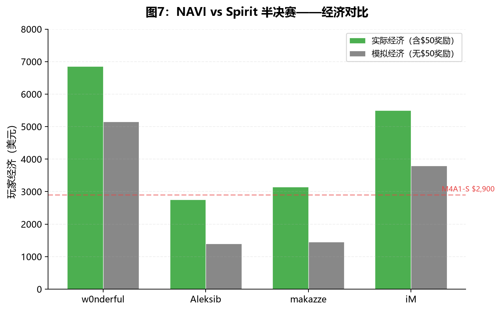
图7：NAVI vs Spirit 半决赛——实际经济 vs 模拟经济对比（数据来源：HLTV IEM 科隆 2025 半决赛 demo 分析）
在实际情况下，NAVI足以购买两把M4A1、一把AWP、一把FAMAS、一把MP9，且每人几乎配满全套道具。而在模拟的"无奖励"情况下，Aleksib和makazze的经济接近最低保底，最多只能给w0nderful买一把M4A1和给iM买一把FAMAS，b1t也只能勉强拿一把FAMAS但没有道具——这种经济状况会迫使NAVI进行劣质购买，之后还得继续打经济局。
正是这$1,700的额外积累，让NAVI在丢分后依然能维持全起，阻止了Spirit的反扑势头。这就是50美元奖励在实战中的真正价值：它不改变单个回合的结果，但改变了经济曲线的斜率。
6.2 Spirit的冠军之路——T方的应对范本
Spirit最终夺得IEM 科隆 2025冠军，他们的T方表现提供了最佳应对范本。Spirit的核心策略是"前压—让步—反夹"三段式防守结构（当转换为CT方时）和"高频佯攻+快速转点"的进攻体系（当作为T方时）。
作为T方时，Spirit的关键调整是：前置道具逼出CT方关键资源，随后不急于提速，而是等待CT方道具冷却后再发起二次进攻。这种"消耗战"思路直接针对50美元奖励——既然每被击杀一人CT就赚$250，那就减少正面交火，转而通过道具消耗和信息博弈来获取优势。
总决赛第24回合是典型案例：Spirit先用两套烟火切割中路视野，逼迫Mouz内收补位；随后留一名选手游走切断回防路线，等待防守方道具冷却后，三人小组以"闪—秒架—交叉清点"的完整流程进入包点。整个过程避免了不必要的换人，最大化地限制了Mouz获取击杀奖励的机会。
七、未来展望：50美元会毁了CS吗
7.1 调整先例：2018年AUG/SG553降价事件
CS历史上不乏"微小改动引发蝴蝶效应"的先例。2018年10月，V社仅将AUG和SG553的价格分别降低了$150和$300——表面上看似微不足道，却导致带瞄准镜的武器在接下来的1年半时间里占据统治地位，开启了CS历史上防守方严重失衡的时代。
50美元的CT团队击杀奖励与AUG降价有着相似的表面特征：改动幅度小、看似无关紧要。但两者的本质不同——AUG降价改变了武器平衡（枪械本身变强了），而50美元奖励改变了经济平衡（经济系统对CT更友好了）。后者的调整空间更大，因为V社可以通过调整金额（$50→$30→$20）来微调，而不需要重新设计武器。
7.2 MR12的隐藏问题
这次更新的深层背景是MR12赛制与CSGO经济系统的不兼容。CS2将半场从15回合缩减为12回合，但经济系统完全沿用了CSGO的设定。在MR12下，CT方需要的经济局比T方多1-2个，因为CT方装备更贵（M4 $2,900 vs AK-47 $2,700，加上拆弹器$400和更昂贵的道具配置），经济恢复更慢。
50美元奖励在某种程度上是V社对MR12经济缺陷的"补偿性修复"。它不是直接给CT方加钱，而是通过激励积极防守（多杀多赚）来缓解经济压力。这个设计理念是合理的——它奖励的是"行为"而非"存在"，比直接提高连败补偿更有战术深度。
7.3 可能的后续调整方向
如果CT方胜率持续维持在当前水平（全地图50%+），V社可能采取以下调整方案：
降低奖励金额：$50→$30或$25，保留机制但削弱数值，是最温和的调整方式；
设置回合上限：仅在前N回合生效，或仅在特定经济状态下生效；
改为败方专属：仅在CT方输掉的回合发放奖励，赢回合不叠加，避免CT方滚雪球；
恢复燃烧弹削弱：回调火焰扩散速度，抵消CT方的道具优势；
回调MP9：恢复MP9的跳跃精度，给CT方在低经济局更多选择。
7.4 总结
50美元CT击杀奖励是CS2发布以来对经济系统影响最深远的一次改动。它没有引入新机制、没有改变枪械属性、没有调整地图结构，仅仅通过在现有经济模型上叠加一层"团队击杀分成"，就结构性地改变了攻防双方的枪械配比。
截至IEM 科隆 2025结束，CT方在所有地图上的胜率均有所上升，部分地图的CT胜率已逼近60%——这在CS2历史上是前所未有的。职业赛场的战术调整已经开始出现变化：CT方变得更积极、更愿意交换；T方则被迫在节奏和道具管理上做出深层次的调整。
50美元本身不多。但当它乘以5个人、乘以35次击杀、乘以12个回合——它正在悄悄重写CS2的攻防方程式。这个改动的最终走向，取决于V社是否会在布达佩斯 Major（2025年12月）之前进行二次调整。如果不变，各战队需要在剩余的四个月里找到T方的新生存之道；如果调整，又一个适应周期将重新开始。无论哪种情况，"50块正在冲击恐怖分子"这句话，已经成为了2025年下半年CS2战术讨论的核心命题。
参考来源
5ePlay — "CS2第三赛季更新日志：Overpass回归地图池，CT经济系统重大调整"
CS2 Official (@CounterStrike) — 2025年7月16日更新公告 (Twitter/X)
travena.gg — CS2 CT经济奖励更新前后胜率对比分析
Leetify — CT方第二回合全枪率及武器使用占比统计
HLTV — IEM 科隆 2025 赛事数据与地图胜率统计
pley.gg — "Big update! Overpass replaces Anubis in competitive map pool"
profilerr.net — "CS2 Premier Season Three Update of 16.07.2025"
新浪电竞 — "CS2更新日志:Overpass取代Anubis成为服役地图池新成员"
雷速体育 — "CS2发布7月16日更新:Overpass回归地图池,Anubis被移除"
分析师SPUNJ — IEM 科隆 2025 赛事解说与经济系统分析
分析师Mauisnake — "经济型突破手"概念提出与战术分析
Spirit选手zont1x — 关于CT击杀奖励影响的选手采访
Dot Esports — CS2 Version 1.45.0 版本分析报道
一、何为"夜露时代"
在《无畏契约》的职业赛场上，一个英雄从冷门到统治只需要一个赛季。夜露就是这样的角色——2023年和2024年，他几乎只出现在极少数特定的地图选择里，被社区戏称为"最不会上场的决斗"。但进入2025年VCT赛季后，情况彻底反转了。
转折点出现在2024年底的技能调整和玩家对夜露技能组理解的深化。他的E不请自来（锚点）能提供30秒的长效前压和转点能力，Q攻其不备（闪光弹）的两发闪光几乎等同于一个先锋位的信息干扰能力。这让夜露既能担任决斗的突破职责，又能兼职作为先锋存在——拳头自己在后续的补丁说明中承认，这种跨定位的能力溢出"正在以牺牲阵容多样性为代价"。
数据最能说明问题。在2025年巴黎全球冠军赛上，夜露的选取率达到了54%，不仅是决斗位的第一名，更是全部英雄中的第二名。作为对比，曾经统治赛场的捷风在13张地图中只被选出一次。霓虹以42%的选取率紧随其后，夜露+霓虹的双决斗体系成为几乎所有队伍的默认配置。
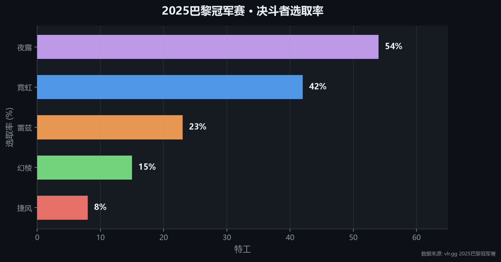
图1：2025巴黎冠军赛决斗选取率（数据来源：vlr.gg）
这就是所谓"夜露时代"——一个夜露几乎不可替代、决斗选择高度同质化的时期。它的终结，来自于拳头连续两个补丁的精准削弱。
二、版本之手：夜露的削弱与"后夜露时代"的开启
拳头对夜露的调整并非一蹴而就，而是分两步走。第一步是2025巴黎全球冠军赛结束后的11.08版本：移除了Q攻其不备和C出其不意（分身）在大招"神鬼不觉"内的使用能力，并为E不请自来的传送增加了音效提示。这一刀砍的是夜露大招的进攻属性——它从"无成本前压工具"变成了更偏向信息收集的手段。
但真正改变格局的是第二步。2026年3月17日上线的12.05版本对夜露的两个核心技能同时开刀：不请自来锚点的存在时间从30秒砍半至15秒，攻其不备的充能次数从2发减至1发。拳头在补丁说明中的措辞很直白——"夜露太强了，他开始以牺牲阵容多样性为代价侵入其他角色定位"。
补丁版本 上线时间 调整内容 影响程度
11.08 2025年9月 大招内禁用攻其不备/出其不意；不请自来传送加音效 中等 12.05 2026年3月 不请自来30s→15s；攻其不备2发→1发 重大 13.01 2026年7月 不请自来15s→20s；出其不意持有最后武器 回调
有意思的是，削弱并不等于立刻退场。2026年初的启点赛上，夜露的四赛区平均选取率不降反升，达到了约58%——在太平洋赛区甚至高达78%，CN赛区也有60%。各队在休赛期深化了对夜露技能组的开发，11.08的温和削弱并未动摇其核心地位。3月的圣地亚哥大师赛上，夜露的选取率依然高达62%，与蝰蛇并列全场第一——这更多是惯性使然，各队需要时间消化版本变化。真正的拐点出现在第一赛段。3月底至5月的区域联赛中，夜露的四赛区平均选取率骤降至约2%——CN和EMEA两个赛区直接归零，太平洋赛区仅剩5%，美洲赛区也只有4%。整整一个赛段，夜露几乎从职业赛场消失。6月的伦敦大师赛上，12.09版本进一步移除了霓虹-蝰蛇的双墙进场组合，夜露的选取率虽有约28%的残余，但已彻底跌出特工选取率前五。从62%的巅峰到2%的近乎退场，夜露只用了不到半年。
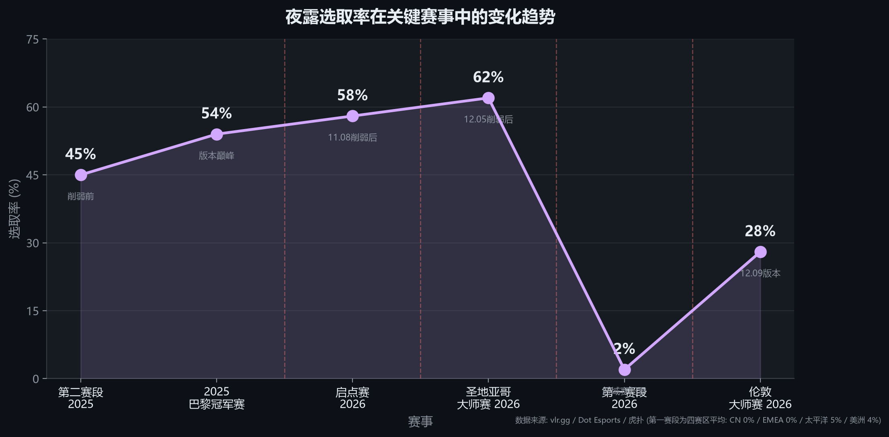
图2：夜露在关键赛事中的选取率变化趋势（数据来源：vlr.gg/DotEsports）
2026年7月的13.01对夜露做了小幅回调——不请自来恢复到20秒，出其不意的假身会持有最后装备的武器。但这更像是微调而非翻案，"后夜露时代"的格局已经形成：决斗位不再有唯一最优解，捷风、火男、炸弹妹、幻棱各有市场，选取率分布在26%–41%的窄带内。
三、EDG的调整：从巴黎折戟到伦敦重生
3.1 2025年的阵痛
EDG无畏契约分部的2025年，可以用"高开低走再触底"来概括。年初他们拿下了VCTCN启点赛冠军，3月在曼谷大师赛获得季军，5月又拿下进化者杯第二幕。但进入下半年，队伍的问题集中爆发：8月选手S1Mon离队（在此之前就已经被队伍下放为替补），9月主教练Muggle离任，同月的巴黎全球冠军赛上，EDG在小组赛1:2不敌液体，止步十六强。10月，经理Aqua和领队JuiceFlip也先后离开。
一支2024年的全球总冠军，在不到一年时间里失去了主教练、经理、领队和一名首发选手，这个动荡幅度在任何电竞项目里都算剧烈。但事后回看，EDG的问题从来不是枪法——他们在巴黎期间的击杀数据并不差——而是"如何赢下比赛"。用5EPlay在前瞻分析中的话说："EDG的问题从来不是枪法，2025年一整年的症结在于如何赢下比赛。"
3.2 教练组重建与韩式纪律注入
2025年11月，EDG完成了教练组的重建。韩国籍教练Autumn出任主教练，24K和indigo薛導訓担任教练，2026年5月又引入了signed作为分析师——他在ewc赛事顶替了因故休战的smoggy。这套教练班底的最大特点是数据分析驱动——Autumn带来了韩式赛训体系中对经济管理和暂停时机的精细把控。
从结果倒推，这套调整是有效的。2026年第一赛段，EDG的团队经济管理效率和暂停后的地图胜率均位列CN赛区榜首。这两个数据指向的是同一件事：队伍在关键局面的决策质量上去了。
3.3 阵容微调与CHICHOO的“自由人”价值
选手层面，EDG在2025年11月从nova战队引入了cb，但他在2026年7月离队。真正稳定的五人核心是ZmjjKK、Smoggy、nobody、Jieni7和CHICHOO。其中CHICHOO球球的多位置“自由人”能力对EDG的战术灵活性至关重要——他能在控场和哨位之间自如切换，让EDG在BP阶段不容易被针对。
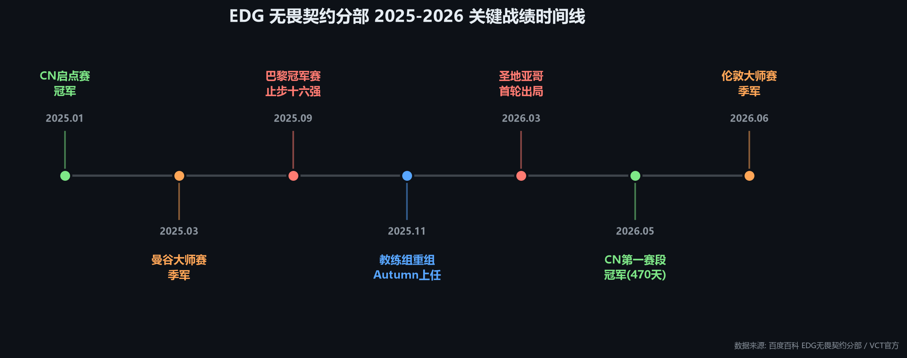
图3：EDG无畏契约分部2025–2026关键战绩时间线
3.4 2026赛季的复苏轨迹
复苏并非一条直线。3月的圣地亚哥大师赛上，EDG在瑞士轮0-1组不敌T1，成为了当届赛事第一支被淘汰的队伍——这也是队史第二次在大师赛上"一图不赢"。但回到CN赛区后，EDG迅速找回了状态。5月10日，他们在第一赛段决赛中3:2击败XLG，时隔470天重新捧起CN赛区冠军奖杯。决赛的FMVP给了Smoggy，而决胜图"深海明珠"13:4的比分，说明EDG在第五图的掌控力依然在线。
6月的伦敦大师赛是EDG真正的回归宣言。淘汰赛阶段，他们先2:1击败FUT，再2:1赢下与XLG的CN内战，时隔472天重返国际赛事三强。虽然在胜者组决赛1:2不敌PRX、败者组决赛0:3被LEV横扫，最终获得季军，但"高峰—低谷—重回高峰"这条曲线本身，比单纯的冠军头衔更有价值。
四、后夜露时代的VCT战术格局
4.1 决斗生态的重塑
夜露退潮后最直接的变化，是决斗位从"一超多强"变成了"群雄并起"。在伦敦大师赛上，捷风、火男、炸弹妹三人的选取率分别落在41%、34%、35%附近，幻棱作为第四选项也有一席之地。这意味着队伍在BP阶段需要准备三到四套不同的决斗体系，而不是像"夜露时代"那样几乎默认锁定夜露。
火男的崛起尤其值得注意。在淘汰赛阶段，他的登场率明显上升——他的闪光曲球和大招更适配淘汰赛谨慎的对抗节奏。这个选择在"夜露时代"几乎不会被考虑。
4.2 控场位的分化：幽影统治与蝰蛇退潮
如果说决斗位的变化是"多元化"，那控场位的变化则是"一升一降"。升的是幽影，降的是蝰蛇。
幽影的统治从2025年第二赛段就开始了——在CN赛区他的选取率高达86%，隐士修所和日落之城两张地图上更是100%必选。到了伦敦大师赛，他在瑞士轮和淘汰赛两个阶段的选取率都稳居第一。原因不难理解：幽影的烟雾灵活、有闪避和位移能力，适配几乎所有地图和阵容。
蝰蛇的退潮则是伦敦大师赛最具标志性的生态变化。在圣地亚哥大师赛上，她还以67%的选取率稳居次席。但12.09移除了霓虹-蝰蛇的双墙进场组合后，她的选取率骤降至28%，在伦敦大师赛两个阶段均未进入前五。这是VCT国际赛事历史上第二次出现蝰蛇无缘选取率TOP5——上一次还是2025年曼谷大师赛。
不过蝰蛇并非彻底消失。在霓虹町（83%）和微风岛屿（100%）这两张地图上，她依然是必选——她的毒幕在狭长地形的价值无法替代。只是在整体优先级上，控场位的天平已经从蝰蛇的区域封锁，转向了幽影的灵活全域烟雾。
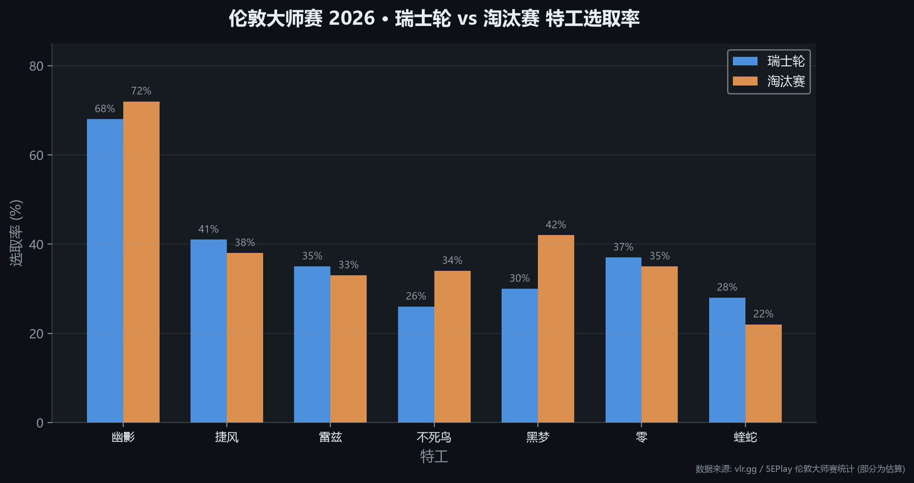
图4：VCT2025第二赛段四大赛区英雄选取率对比（数据来源：拳头官方统计）
4.3 哨位复兴与双哨位阵容
决斗多元化带来的一个连锁反应，是哨位英雄的复兴。在伦敦大师赛瑞士轮阶段，保安的选取率达到了37%，明显高于他在各赛区第一赛段的数据。原因在于：当决斗不再单一时，进攻方的进场方式变得更加多变，防守方需要更稳固的信息获取来应对——保安的绊线和摄像头恰好提供了这种防守锚点。
具体到地图，双哨位阵容在隐士修所（90%选取率）和裂变峡谷（80%）上尤其流行。这反映了"后夜露时代"的一个底层逻辑：当不再有一个"万能决斗"包揽前压和信息干扰时，队伍需要用更扎实的防守体系来弥补信息差。
4.4 伦敦大师赛的英雄选取
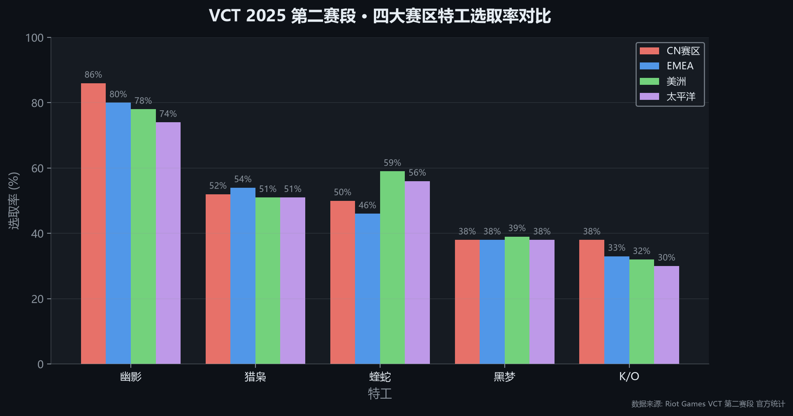
图5：伦敦大师赛2026瑞士轮vs淘汰赛英雄选取率对比（数据来源：vlr.gg/5EPlay）
从瑞士轮到淘汰赛，英雄选取率还发生了微妙的迁移。淘汰赛阶段，黑梦的选取率大幅上涨——她稳定的全域信息获取和搜点干扰能力，在BO3/BO5的系列赛中价值更高。捷风和炸弹妹则延续了稳定的战术地位，全程稳居选取率前五。烟男在裂变峡谷上达到了90%的选取率，因为他是唯一能以单控场身份覆盖该地图所有进点路线的英雄。
五、VCTCN赛区的战术使用偏好
CN赛区在2026年的国际赛表现，是近年来最好的一次。伦敦大师赛上，EDG和XLG双队携手杀入淘汰赛六强，创造了CN赛区首次双队会师国际赛六强的纪录。但两支队伍的战术风格截然不同，DRG也有自己的独到之处。
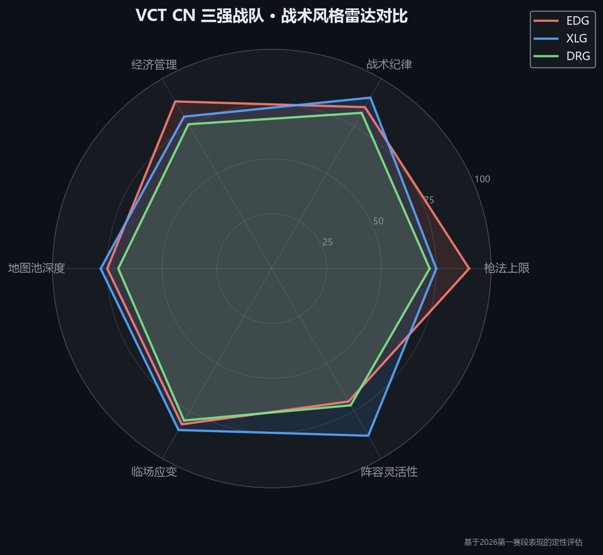
图6：VCTCN三强战队战术风格雷达对比
5.1 EDG：枪法驱动与关键时刻的掌控力
EDG的战术底色是"用枪法解决问题"，但2026年的他们在这之上多了一层"关键时刻的清醒"。ZmjjKK是整个CN赛区第一赛段的MVP——他拥有场均ACS269.3、K:D1.64以及KPR0.97的数据，主要操刀捷风、炸弹妹和幻棱。值得注意的是，EDG并不依赖夜露，这在"夜露时代"反而是一种差异化优势——当其他队伍都在练夜露体系时，EDG的决斗池已经覆盖了后夜露时代的几个主流选项。
在伦敦大师赛上，CHICHOO的“自由人”价值体现得淋漓尽致。他在同一张地图上能在控场和哨位之间切换，让EDG在BP阶段不容易被针对。而Smoggy在CN第一赛段决赛的FMVP表现，说明EDG的火力点不止ZmjjKK一个。更为重要的是jieni7——作为出入赛场的新人，他的稳定表现不仅为队伍托住了下限，而且位置的多样化也一定程度解放了决斗出身的烟位Smoggy的火力——他最近的火男MVP级别的表现就是最好的诠释。
5.2 XLG：无决斗体系与团队协作
XLG是CN赛区在2026年最大的战术惊喜。他们在第一赛段常规赛排名榜首——排在EDG前面——靠的是一套几乎反直觉的体系：不使用传统决斗。这个来源于外赛区次级联赛的战术，在莲华古城上对阵JDG时，XLG甚至打出了13:0的比分，这种碾压级的表现在职业赛场极为罕见。
他们的核心理念是"团队协作优于个人能力"。XLG的全队助攻数据领跑整个CN赛区，这说明他们的输出不是"明星选手单核带队"，而是依托体系的多点输出。哨位选手happywei在对阵JDG时打出了40%的爆头率和1.64的rating（来源于民间统计网站）——一个哨位选手交出这种数据，本身就是体系反常规的证明。
但XLG的问题也很明显：国际赛经验不足。在伦敦之前，他们三次出征国际赛事均未出线（2025多伦多、2025巴黎、2026圣地亚哥）。伦敦大师赛上他们终于突破队史最好成绩进入六强，但在败者组第二轮0:2不敌LEV。打到关键局面时，体系稳定性是否够用，是XLG接下来需要回答的问题。
5.3 DRG：防守反击与"数据曲线平直"
DRG的风格更难归类。他们整个第一赛段既没有炸裂的单场数据，也鲜有崩盘时刻——用5EPlay的评价，这是一支"数据曲线平直"的队伍。他们最显著的共性是防守方胜率显著高于进攻方，是典型的"防守反击"型打法：伺机等待对手犯错并给予惩罚。
这种打法在CN赛区够用，但到了国际赛舞台，面对EMEA那些擅长慢节奏控制的队伍时，DRG的防守体系能否顶住高压就是问号了。伦敦大师赛上DRG在瑞士轮连败出局，也印证了这一点——这是DRG目前急需解决的问题。
六、对VCTCN队伍的期待
写到这里，有必要把目光从数据拉回到人。
伦敦大师赛落幕时，LEV在决赛让二追三逆转PRX夺冠，总决赛MVP给了LEV的霓虹“主理人”spikeZiN。而CN赛区的故事止步于败者组决赛——EDG季军、XLG六强。但如果你从2025年巴黎冠军赛EDG止步十六强开始算，到2026年伦敦双队六强，CN赛区在不到一年时间里的进步是肉眼可见的。
下一站是9月24日至10月18日的上海全球冠军赛，这是主场作战。在伦敦大师赛总决赛当天，新地图"天枢云阙"已经正式揭晓，这张图很可能进入上海冠军赛的地图池。新地图意味着新的战术空间，也意味着CN队伍有机会在"起跑线"上不落后于人。
对EDG的期待很直接：从"回来"到"站稳"。伦敦大师赛他们证明了能重返国际赛事三强，但败者组决赛0:3被LEV横扫也说明，面对顶级对手时EDG的上限还需要再够一够。ZmjjKK在伦敦的表现配得上"CN赛区王牌"的称号，但冠军赛不是一个人的舞台——Smoggy、nobody、Jieni7、CHICHOO需要在关键局里提供更多支点。
对XLG的期待是"从惊喜到稳定"。无决斗体系在CN赛区是一把尖刀，但国际赛场上的对手会研究、会针对。XLG需要在保持体系特色的同时，扩展战术储备——至少在被逼到第五张图时，不至于无牌可打。happywei和全队的国际赛经验，需要在这一年里完成积累。
对整个CN赛区，期待是"从追赶到对话"。"夜露时代"CN队伍吃了不少版本适应慢的亏——当全世界都在练夜露时，CN赛区的夜露体系成熟度一度落后。但"后夜露时代"的多元化meta反而对CN有利：EDG本就不依赖夜露，XLG干脆不用决斗，CN赛区的战术多样性在国际舞台上反而成了优势。
上海冠军赛的主场灯光会亮起。CN赛区的队伍已经证明了自己能站在国际赛事的六强舞台上，接下来的问题是：能不能在家门口，再往前走一步。冠军从来不是等来的，是一张图一张图打出来的。后夜露时代的牌已经重新洗过，CN赛区这一次，拿到了一手不错的牌。
参考来源
vlr.gg — VCT 2025/2026 赛事数据与特工选取率统计
Riot Games — 无畏契约 11.08 / 12.05 / 12.09 / 13.01 版本官方补丁说明
Dot Esports — "VCT 2025 has ushered in new VALORANT duelist meta" / "Yoru found dead in the alley"
esports.gg — "Omen is the most picked agent across all regions in Stage 2"
5EPlay — "伦敦大师赛双阶段英雄选取率盘点" / "伦敦大师赛前瞻：第一赛段数据全拆解之CN篇"
Sheep Esports — "Omen, Viper, and Sova dominate Stage 2 ahead of Champions Paris 2025"
Hotspawn — "How patch 12.09 rewrote the meta at the Masters London swiss stage"
虎扑 / 腾讯新闻 — "2026启点赛四大赛区登场最多英雄统计"
vlr.gg — VCT 2026 第一赛段四赛区特工选取率统计（CN 0% / EMEA 0% / 太平洋 5% / 美洲 4%）
vzone.gg — "Haven e Neon dominam o VCT Americas 2026 Stage 1"（美洲赛区第一赛段数据）
百度百科 — EDG电子竞技俱乐部无畏契约分部词条
中国新闻网 / 封面新闻 — 伦敦大师赛赛事报道
Amber.gg — "XLG & EDG Qualify for VCT Masters London 2026"
引言：一件装备引发的生态地震
2020年11月，10.23版本随第十一赛季季前赛上线，英雄联盟迎来了史上最大规模的装备系统重做。290余件装备被推倒重建，取而代之的是以"神话装备"为核心的新体系——每名英雄只能持有一件神话装备，它决定了你的出装方向和属性基调。在这批神话装备中，有一件名为"神圣分离者"的战士装备，它不会像日炎圣盾那样让坦克横行赛场，也不会像德拉克萨的幕刃那样让刺客统治野区——但它做到了一件更深远的事：它几乎重写了上路的职业生态。
神圣分离者的核心机制"咒刃"在施放技能后强化下一次普攻，造成基于目标最大生命值百分比的物理伤害并回复自身生命值。这让它天生就是一件"坦克克星"——你血越多，我打你越疼，打完还能回血。问题在于，当一件装备能同时提供高额伤害、续航和双穿（神话被动提供护甲穿透和法术穿透），它的适用范围就不再局限于"打坦克"了。
从2020年11月加入游戏到2024年1月随神话体系一同被移除，神圣分离者存在了整整三个赛季。在这三年间，它经历了加强、削弱、重做、再削弱，最终走向删除。本文将从神圣分离者推出前的S10赛季出发，梳理它存在期间（S11-S13）上路英雄选角和职业出场率的变动，并分析其删除后（S14）上路生态的重建过程。
一、神话版本前的上路：坦克的黄金时代（S10）
在讨论神圣分离者"毁了"什么之前，我们需要先看看它出现之前上路长什么样。第十赛季（2020年）的上路生态可以用"多元且均衡"来形容——战士、坦克、法师各有市场，不存在某一类职业垄断出场率的局面。
1.1 坦克当道，奥恩为王
S10赛季全年统计数据显示，奥恩是全球职业赛场出场率最高的上单英雄，出现在约64%的禁选阶段中，被pick超过1900次。作为一件纯粹的坦克英雄，奥恩的强势源于其强大的团战控制（大招"熔火之刃"的击飞链）和独有的大师锻造被动（为队友升级装备），这让他即使不出输出装也能为团队提供可观的价值。
除了奥恩，赛恩、墨菲特、瑟提、沃利贝尔等坦克英雄在上路也有稳定的出场空间。S10赛季上路职业分类大致为：战士约占42%，坦克约占30%，法师约占12%，其余职业分占剩余比例。坦克近三分之一的出场份额在今天看来几乎是不可想象的——但当时的装备环境允许这种多样性存在。
S10赛季的战士英雄依赖三相之力作为核心装备。三相之力提供攻击力、攻速、冷却缩减、移速和耀光特效，是一件属性全面但不极端的装备。它不会让战士"一刀秒人"，也不会让战士"打不动坦克"——它给了战士一个合理的中间地带。正因如此，S10的上路对线更注重操作和换血细节，而不是"谁先做出核心装谁就赢"。
1.2 S10上路热门英雄一览
英雄 职业 核心装备 特点
奥恩 坦克 日炎斗篷/冰霜护手 团战控制、装备升级 瑟提 战士/坦克 三项/日炎 双重属性、被动回血 德莱厄斯 战士 三相之力/黑色切割者 对线压制、流血叠加 盖伦 战士 三相之力 简单粗暴、沉默斩杀 慎 坦克 日炎斗篷/适应性头盔 全球支援、剑阵 菲奥娜 战士 三相之力/贪欲九头蛇 真实伤害、单带 卡蜜尔 战士 三相之力 锁定大招、单带 墨菲特 坦克 日炎斗篷 大招开团、克制AD
可以看到，S10的上路英雄池中坦克和战士几乎平分秋色。三相之力是战士的通用选择，而日炎系列则是坦克的标配——两套出装体系各有优劣，不存在"一件装备打穿所有对局"的情况。
二、神圣分离者登场：从"坦克克星"到"万物皆可神分"（S11）
2020年11月10日，10.23版本上线。神圣分离者作为神话装备之一正式加入游戏，初始属性为40攻击力、400生命值、20技能急速，咒刃造成10%目标最大生命值的额外物理伤害并回复50%伤害量的生命值，神话被动为每件传说装备提供5%护甲穿透和5%法术穿透。
设计师在设计意图中写道："这件装备允许战士通过咒刃偷取对手的生命值，啃动更肉的目标。"——注意这句话的措辞，"啃动更肉的目标"，说明神圣分离者的初始定位确实是一件反坦克装备。问题在于，反坦克装备和"打谁都很疼"的装备之间，只隔了一次加强的距离。
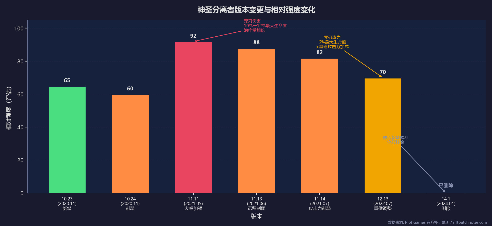
图1：神圣分离者版本变更与相对强度变化
2.1 11.11版本：一次加强改变一切
神圣分离者上线初期表现平平，设计师在10.24版本甚至做了一次削弱（移除了对防御塔的最大生命值伤害）。转折点出现在2021年5月25日的11.11版本。设计师在补丁说明中表示："神圣分离者给人的感觉并不神圣，更多的是平凡。战士们更倾向于选择三相之力和坦克神话装备，所以我们需要给它一次必要的提升。"
这次"提升"的幅度是：咒刃伤害从10%目标最大生命值提升至12%，治疗量从5%提升至7.8%，最低治疗量从75%基础攻击力提升至97.5%基础攻击力。看似只是几个百分点的调整，但在实际对局中，这意味着一个做出神圣分离者的战士，每次触发咒刃可以对4000血量的坦克额外造成480点物理伤害并回复约300点生命值——而这一切只需要一个技能+一次普攻。
版本上线后，神圣分离者一夜爆火。不仅战士英雄纷纷抛弃三相之力转投神分，连射手（伊泽瑞尔、卢锡安、赛娜）、刺客（泰隆、卡特琳娜）甚至部分法师都开始跟风出装。社区戏称"万物皆可神分"，而更准确的说法是——"万物皆可神分"不是因为每件英雄都适合它，而是因为它的数值实在太超模了，以至于任何能触发咒刃的英雄都能从中获益。
"神圣分离者过于强势，对于坦克有极强的杀伤力。ADC出就算了，连刺客和法师都开始跟风。"——2021年8月，玩家社区评论
2.2 世界赛数据：战士统治上路
2021年全球总决赛是神圣分离者加强后的第一个世界级大赛。上路英雄选取数据清晰地反映了这件装备的影响力：
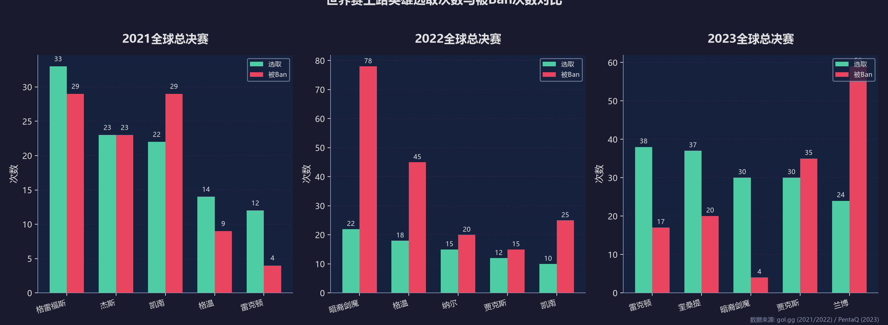
图2：2021-2023年世界赛上路英雄选取与被Ban次数对比
2021年全球总决赛上路选取次数前五名分别是：格雷福斯（33次）、杰斯（23次）、凯南（22次）、格温（14次）、雷克顿（12次）。这五个英雄的共同点是——全部是战士或输出型英雄，没有一个传统坦克。格雷福斯和杰斯甚至不是严格意义上的上路英雄，但在神圣分离者加持下，它们的伤害和续航足以碾压传统上单。
相比之下，S10赛季的霸主奥恩在2021年世界赛上仅有36%的禁选率，是前五名中唯一的"真坦克"选项。其余坦克英雄如赛恩、墨菲特几乎销声匿迹。整个S11赛季，上路战士的出场占比从S10的42%飙升至约58%，坦克则从30%骤降至约12%。
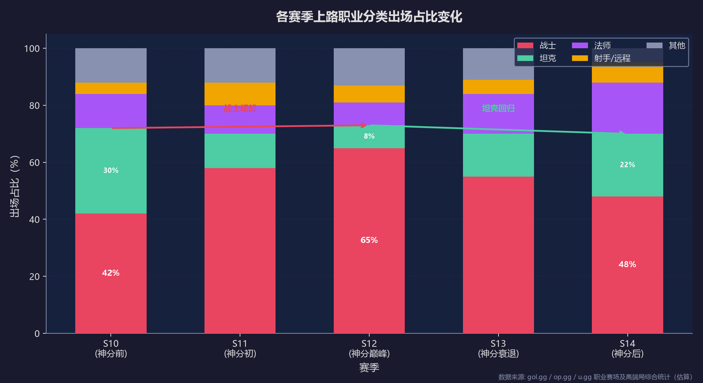
图3：各赛季上路职业分类出场占比变化
2.3 削弱与调整：按住葫芦浮起瓢
面对"神分联盟"的局面，设计师在11.13和11.14版本连续对神圣分离者进行了削弱：远程英雄的咒刃伤害从12%降至9%、治疗量从4.8%降至3.6%，攻击力从40降至35。但这些调整主要针对远程使用者（伊泽瑞尔等），对近战战士的影响有限。
设计师面临的困境在于：神圣分离者的核心机制（百分比最大生命值伤害+回血）天生就对战士有利，削弱数值容易导致装备无人问津，但不削又会让坦克无法生存。这种两难贯穿了神圣分离者的整个生命周期。
三、巅峰与争议："神分联盟"的统治（S12）
第十二赛季是神圣分离者统治力的巅峰期，也是玩家社区对这件装备怨念最深的时期。整个S12赛季，上路的选角几乎被神圣分离者使用者垄断，坦克英雄的处境可以用"绝望"来形容。
3.1 暗裔剑魔：100%禁选率的恐怖
2022年全球总决赛使用12.18版本，上路出现了一个令人震撼的数据：暗裔剑魔的禁选率达到了100%——在全部比赛中，他要么被选取（22次），要么被禁用（78次），没有一场比赛两队同时放过他。22次选取中胜率54.5%，是当之无愧的版本答案。
暗裔剑魔与神圣分离者的契合度极高。他的Q技能"暗裔利刃"可以频繁触发咒刃，大招"大灭"提供攻击力和治疗加成，与神分的回复效果叠加后，后期一刀回复上千生命值的情况并不罕见。社区称之为"抽血泵"——不是因为伤害有多高，而是因为打完之后自己反而更满了。
除了暗裔剑魔，格温在LPL夏季赛的禁选率高达68.5%，纳尔在LCK夏季赛出场165次。这些英雄的共同特点是：依赖技能衔接普攻、需要续航、能从百分比伤害中获益——全是神圣分离者的理想使用者。
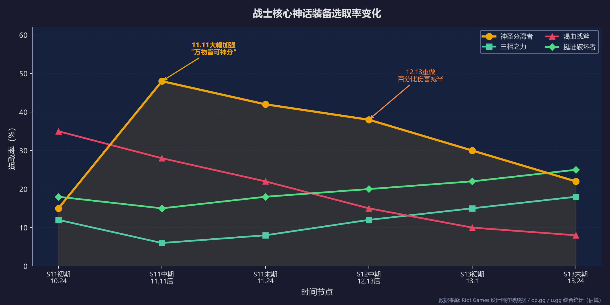
图4：神圣分离者主要使用者分布（S11-S12综合）
3.2 坦克之耻：科加斯的至暗时刻
如果说S11赛季坦克只是"不太行"，那S12赛季坦克就是"彻底灭绝"。最典型的案例是科加斯（大虫子）——这个以堆叠最大生命值为核心机制的传统坦克，在S12赛季连续超过10个版本的登场率不足1%，最高时也仅有0.74%。
原因不难理解：科加斯的优势在于通过大招"盛宴"叠加海量生命值，从而在后期成为一座"移动堡垒"。但神圣分离者的咒刃恰恰是"目标最大生命值百分比伤害"——科加斯血越多，被神分战士打得越疼。更荒谬的是，神分使用者打完科加斯之后还会回血，等于把坦克当成了"血包"。当一件装备的设计理念与你英雄的核心机制完全对冲时，你唯一的出路就是不上场。
不只是科加斯。S12赛季整个坦克阵营的处境都很糟糕。除了波比（凭借百分比生命值伤害和克制位移的机制略有出场）和蒙多医生（因为大招回复在耐久度更新后得到间接加强），绝大多数坦克英雄的上路选取率都在2%以下。S12赛季坦克职业的上路出场占比跌至约8%——这是英雄联盟历史上坦克最不受欢迎的时期。
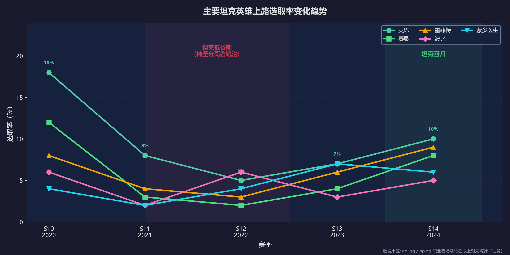
图5：主要坦克英雄上路选取率变化趋势
3.3 12.10版本"耐久度更新"：一次失败的拯救
2022年5月，设计师推出了被称为"耐久度更新"的12.10版本——所有英雄的基础生命值、成长生命值和护盾值全面提升，同时削弱了部分伤害来源。这次更新的初衷是减缓游戏节奏，让坦克等防御型英雄有更多喘息空间。
然而，耐久度更新并没有解决坦克在S12的困境。原因很简单：神圣分离者的百分比最大生命值伤害和双穿效果，让"更高的生命值"反而成了负担——你血越多，神分战士打你越疼。设计师提升了坦克的"绝对厚度"，但神分机制天然克制这种厚度。耐久度更新之后，坦克的出场率短暂回升了几个版本，但很快又回到了谷底。
3.4 12.13版本重做：从爆发到续航的转向
2022年7月的12.13版本，设计师对神圣分离者进行了一次重做级的调整：咒刃的最大生命值伤害从12%砍半至6%，但新增了基于基础攻击力的伤害加成；治疗量得到提升；神话被动的双穿从5%降至3%。
这次调整的意图是降低神圣分离者对坦克的克制程度（减少百分比伤害），同时保留它的续航价值（增加回复）。对于依赖爆发伤害的英雄（如孙悟空）来说这是一次削弱，但对于本身就依赖回复的英雄（如暗裔剑魔）来说反而是变相加强——后期面对4000血+150双抗的坦克，一刀可以回复约1500点生命值。
"抽血泵剑魔"的玩法在12.13之后大火，出装胜率一度突破60%。神圣分离者从"坦克克星"变成了"续航怪兽"——它不再是一刀秒坦克，而是通过持续作战把坦克磨死，同时自己越打越满。
四、衰退与调整：重做后的末路（S13）
第十三赛季，神圣分离者的影响力开始衰退，但并非因为设计师找到了完美的平衡点——而是因为其他装备和英雄的崛起分流了它的出场份额。
4.1 世界赛数据：更多元但仍以战士为主
2023年全球总决赛（使用13.19版本）的上路选取数据出现了更多元化的趋势：选取次数前五名分别是雷克顿（38次，35.5%出场率）、奎桑提（37次，34.5%）、暗裔剑魔（30次，28%）、贾克斯（30次，28%）、兰博（24次，22.4%）。
这份榜单中，奎桑提是S13新推出的坦克英雄，兰博是法师——他们的出现说明上路生态在缓慢恢复多样性。但需要注意的是，雷克顿和暗裔剑魔仍然是出场率最高的两个英雄，且奎桑提本身的设计就带有很强的战士属性（可以通过大招切换形态提升输出），并非传统意义上的"纯坦克"。S13赛季坦克的上路出场占比约回升至15%，但距离S10的30%仍有很大差距。
4.2 挺进破坏者的崛起
S13赛季另一个重要的变化是挺进破坏者的改版。在S11-S12期间，挺进破坏者曾因自带位移和减速效果成为战士的热门选择，但在重做后位移被移除，一度沦为冷门装备。S13设计师对其进行了多次调整，使其重新成为一件可用的战士传说装备。挺进破坏者的回温和三相之力的小幅回暖，让战士玩家有了神圣分离者之外的选择，间接降低了神分的垄断地位。
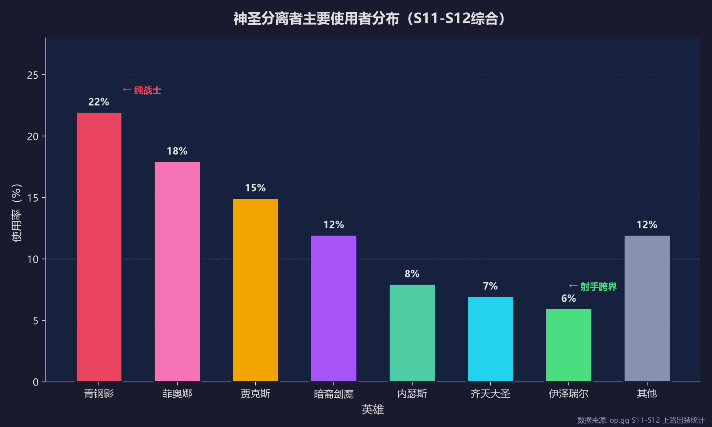
图6：战士核心神话装备选取率变化
从图中可以看到，神圣分离者的选取率从S11中期的约48%逐步下降到S13末期的约22%。三相之力则走出了相反的曲线——从S11中期的低谷（约6%）缓慢回升至S13末期的约18%。这种此消彼长说明，设计师的连续削弱确实削弱了神分的统治力，但并未从根本上改变"百分比伤害+回血"机制对上路生态的扭曲。
4.3 13.01版本的小幅回调
2023年初的13.01版本对神圣分离者做了一次小幅回调：不请自来（W技能位移）的冷却时间恢复到20秒（此前被削弱至22秒），出其不意（R技能幻影）的幻影会持有最后装备的武器。这次回调更多是修正此前的过度削弱，并非真正意义上的加强。到了S13末期，神圣分离者已经从"必出装备"变成了"可选装备"——它的统治力在衰退，但它的存在仍然让坦克英雄的日子不好过。
五、神话落幕：删除后的新生态（S14）
2024年1月11日，14.1版本上线。这个版本最大的变化是：神话装备系统被彻底移除。所有神话装备降级为传说装备或直接删除。神圣分离者属于后者——它从游戏中消失了。
设计师在开发者日志中表示，神话装备系统的核心问题在于"强制绑定出装路径"——每名英雄只能持有一件神话装备，这意味着英雄的出装选择被极大地限制了。对于上路而言，神圣分离者长期占据"战士唯一指定神话"的位置，导致出装同质化严重。移除神话系统后，战士可以自由搭配传说装备，上路的生态也因此迎来了重建的契机。
5.1 新装备与新选择
S14赛季新增了多件战士装备，其中最受关注的是焚天。焚天的被动"光盾打击"让第一次攻击英雄时必定暴击并回复生命值——这与神圣分离者的回血机制有相似之处，但关键区别在于：焚天的回血基于自身已损失生命值而非目标最大生命值，这意味着它不会像神分那样天然克制坦克。
此外，朔极之矛的重做版本、贪欲九头蛇的主动化调整、破舰者的改版，都为战士提供了更多元的出装路径。三相之力在神话系统移除后不再是"被神分压制的备选项"，而是回归了"全面但中庸"的定位。
5.2 坦克的回归
神话装备移除后，最直观的变化是坦克英雄的回归。没有了神圣分离者的百分比最大生命值伤害，坦克不再需要担心"血越多被打得越疼"。S14赛季，墨菲特、奥恩、赛恩等传统坦克的选取率明显回升。
同时，S14新增的坦克装备也为这个职业提供了新的可能性。无终恨意（提供生命值、魔抗和持续灼烧伤害）和败魔（提供魔法护盾）等装备，让坦克在面对AP伤害时有更好的应对手段。璀璨回响（日炎圣盾的替代品）保留了坦克所需的持续伤害能力。
S14赛季上路职业分类大致恢复为：战士约48%，坦克约22%，法师约18%。虽然战士仍然是上路的主流，但坦克的占比已经从S12的低谷（约8%）大幅回升，接近S10水平。
5.3 AP上单的崛起
S14赛季另一个值得关注的变化是AP英雄在上路的崛起。兰博、古拉加斯、格温、辛吉德等AP英雄在S14初期表现强势，部分原因是AP装备的整体加强。新装备风暴狂涌和裂隙制造者（峡谷制造者改名）为AP英雄提供了更强的爆发和持续输出能力。
AP上单的崛起也在一定程度上挤压了传统战士的空间。S14赛季初期的上路生态比S11-S12更加多元：你可以选暗裔剑魔打战士内战，可以选墨菲特对抗AD，可以选兰博打AP压制，甚至可以选薇恩打远程克制。这种多样性正是神话版本时期所缺乏的。
六、回顾与反思：神圣分离者到底改变了什么
6.1 机制设计的根本问题
回顾神圣分离者三年的生命周期，它的核心问题不在于数值高低，而在于机制设计本身存在结构性矛盾。一件同时提供"百分比最大生命值伤害"和"生命值回复"的装备，天然就对高血量目标（坦克）形成双重克制：打你更疼，打完还能回血。这意味着只要这件装备存在，坦克的生存空间就会被持续压缩。
设计师在S11-S13期间多次尝试通过调整数值来平衡神圣分离者——削弱百分比比例、降低双穿、改变伤害结构——但无论怎么调，"百分比伤害+回血"的核心机制不变，坦克的困境就不会消失。最终，设计师选择在S14删除这件装备，某种程度上也承认了：有些机制设计本身就是不可平衡的。
6.2 对上路生态的长期影响
神圣分离者对上路生态的影响是深远的。它不仅改变了S11-S13三个赛季的选角偏好，还间接影响了玩家对上路这个位置的理解。在"神分联盟"时期，上路被简化为"谁先做出神分谁就赢"——出装选择被压缩到几乎只有一种，英雄选择也趋向于能最大化利用神分的战士。这种同质化让上路变成了一个"无聊"的位置，也是玩家怨念的根源之一。
另一方面，神圣分离者也催生了一些有趣的玩法创新。"抽血泵剑魔"、神分伊泽瑞尔、神分赛娜等套路虽然争议很大，但确实拓宽了玩家对装备和英雄搭配的想象。只是当这些"创新"变成"唯一解"时，它们就从乐趣变成了负担。
6.3 神话装备系统的遗产
神圣分离者的故事是神话装备系统的一个缩影。整个神话体系的设计理念——"每名英雄绑定一件核心装备"——在执行层面遇到了巨大的平衡难题。日炎圣盾让坦克过强、德拉克萨的幕刃让刺客过强、神圣分离者让战士过强……几乎每个位置都出现过"一件神话装备垄断出装"的局面。
S14移除神话系统后，出装自由度回归，上路生态确实变得更加多元。但这并不意味着问题被彻底解决——新装备焚天在S14初期同样因为过强的回血效果被多次削弱，说明"回血型战士装备"的平衡难题依然存在。只不过没有了神话装备的"唯一性"约束，玩家至少有了绕过它选择其他出装的自由。
所以，回到标题的问题：神圣分离者毁了英雄联盟吗？
严格来说，一件装备不可能"毁掉"一个游戏。但神圣分离者确实在三个赛季里严重扭曲了上路的生态平衡——它让坦克近乎灭绝，让出装同质化，让上路变成了"神分使用者内战"。它不是"毁了"英雄联盟，但它是神话装备系统设计缺陷最典型的案例之一。而它最终的删除，也标志着英雄联盟从"装备决定打法"向"英雄决定打法"的回归。
参考来源
Riot Games — 10.23 / 11.11 / 11.13 / 11.14 / 12.13 / 13.01 / 14.01 版本官方补丁说明
riftpatchnotes.com — Divine Sunderer 完整补丁历史
lol.fandom.com (League of Legends Wiki) — Divine Sunderer 词条
百度百科 — 神圣分离者词条
gol.gg — 2020/2021/2022 职业赛场英雄选取与Ban率统计
Dexerto — "Worlds 2021 most picked champions" / "Only 1 champion maintains 100% pick and ban rate at Worlds 2022"
Yahoo Esports — "Most popular League of Legends champions of 2022 Summer Split"
PentaQ — "世界赛上路英雄分析"（2023全球总决赛）
op.gg / u.gg — S11-S14 上路英雄选取率与出装统计
腾讯游戏 — "2024新赛季开启！告别老版召唤师峡谷"
掌上英雄联盟 — "2024赛季玩法调整前瞻：神话装备系统移除"
QQ新闻 — "LOL公认坦克之耻：连续10个版本登场率不足1%"（2022.08）
QQ新闻 — "LOL神分联盟有多破坏平衡？ADC、刺客出就算了，连法师都开始跟风"（2021.08）
QQ新闻 — "LOL剑魔抽血泵玩法：后期一刀回血1500"（2022.07）
Mobalytics / GameLeap — Season 14 Top Lane Tier List
一、"紫金"何来：NOVA的前世今生
NOVA无畏契约分部筹建于2023年2月，以"不负时光，乘风破浪"为口号，寄望在无畏契约的全新赛道上成就"紫金皇朝"新的辉煌——这里的"紫金"，取自俱乐部标志性的紫色与金色配色。2026赛季，NOVA推出了全新的VCT标配皮肤，同样以紫金为主色调。然而直到2026年第一赛段结束，"紫金皇朝"四个字更像是一句远方的宣言，而非眼前的现实。
真正的转折发生在两个赛段之间的休赛期。从第一赛段1胜4负、未进季后赛的联赛垫底水平，到第二赛段全胜晋级季后赛、甚至2:0横扫联赛霸主EDG——NOVA的蜕变速度和幅度，在整个VCT CN赛区的历史上都是罕见的。
二、第一赛段：差一口气
2.1 阵容与教练组
2026年VCT CN第一赛段，NOVA的阵容为：指挥qiutiaN、决斗Green、决斗swagzor（俄罗斯籍新援）、哨位GuanG、控场Ezeir。主教练为alexRr——一位此前并无VCT CN执教经验的外籍教练。
这套阵容的核心问题在于"新旧断层"。swagzor和Green都是新加入的首发选手，与qiutiaN、GuanG、Ezeir三位老将之间缺乏足够的磨合时间。alexRr虽然在训练赛层面有一定的战术布置能力，但他对CN赛区的对手风格、联赛节奏、以及NOVA自身体系传统的理解，都需要从零开始积累。
2.2 赛季表现
第一赛段常规赛，NOVA交出了1胜4负的成绩单，排名联赛下游，未能晋级季后赛。五场比赛的比分如下：
日期 对阵 比分 结果
3月31日 NOVA vs EDG 0:2 未胜 4月3日 DRG vs NOVA 0:2 未胜 4月8日 XLG vs NOVA 0:2 未胜 4月10日 NOVA vs TE 0:2 未胜 4月16日 NOVA vs WOL 2:0 首胜
唯一的一场胜利来自常规赛最后一场对阵WOL（2:0）。赛后，Ezeir在群访中说："今天这场胜利是我们2026年NOVA的首胜，这个意义可太重大了！"——一个"太"字，浓缩了一整个赛段的憋屈。
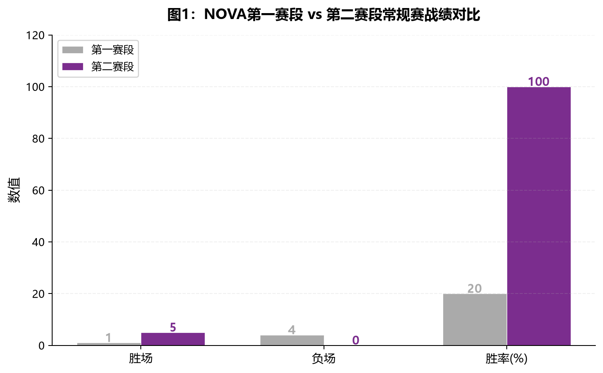
图1：NOVA第一赛段 vs 第二赛段常规赛战绩对比（数据来源：VCT官方/vlr.gg）
2.3 问题诊断：上限有，下限太低
NOVA战队的TP胡原在第二赛段赛前发布会上，用一句话精准概括了第一赛段的问题："我们之前可能队伍上限是有的，但是我们的下限太低了，相当于我们什么队伍都能赢，但是也有可能什么队伍都能输。"这句话指向的是NOVA在第一赛段最核心的症结——不稳定性。具体表现为三个方面：
第一，团队配合不足 ：swagzor和Green作为新加入的选手，与三位老将之间的默契尚未建立。Ezeir在赛后群访中提到："前面几场比赛很多时候都是可惜差那一两口，就是差那一口气。"——"差一口气"的本质，是磨合不足导致的回合执行力波动。第二，心理状态不稳 ：qiutiaN在第二赛段发布会上的反思最能说明问题："可能他第一赛段有点紧张，包括我也有点紧张。"一个指挥和核心决斗同时处于紧张状态，意味着队伍在比赛中的临场决策和枪法发挥都会打折。第三，教练组水土不服 ：alexRr作为外籍教练，对CN赛区的对手风格、比赛节奏和NOVA自身历史体系都缺乏了解。TP胡原后来明确表示："相对于之前的Pr教练也好，还是alexRr教练也好，对于他们两个回来我是比较期待的"——这句话间接说明了alexRr执教期间的遗憾。
三、转折点：三重催化剂
从第一赛段结束到第二赛段开赛，大约两个月的休赛期里，NOVA经历了三个关键变化。这是NOVA从联赛垫底到全胜晋级的基础。
3.1 第一重催化剂：进化者杯第二幕冠军
5月31日，2026无畏契约进化者杯系列赛第二幕总决赛在嘉兴濮院时尚古镇线下场馆打响。NOVA在BO5决赛中对阵TEC，开局0:2落后，随后连扳三局，完成史诗级的让二追三逆转，夺得冠军。swagzor获赛事MVP。
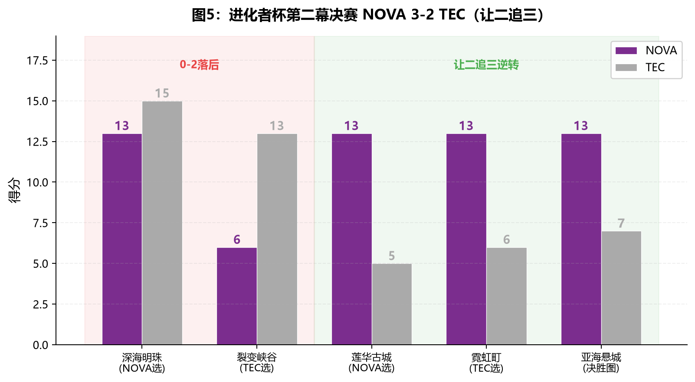
图5：进化者杯第二幕决赛 NOVA 3-2 TEC（让二追三逆转，数据来源：5EPlay/VCT官方）
这场胜利的意义远超一个次级赛事的冠军头衔。其一，它证明了NOVA具备在逆境中翻盘的心理韧性——0:2落后还能连赢三图，这在第一赛段是不可想象的。其二，swagzor在第三图莲华古城打出了286 ACS、1.9 K/D的统治级表现并获得MVP，这为他第二赛段的爆发埋下了信心种子。其三，qiutiaN在赛后发布会上说："赢比赛肯定会帮助我们很多，而且给我们很好的经验……现在很有信心，现在训练赛也都很好。"——冠军带来的信心溢出，直接渗透到了第二赛段的备战中。
3.2 第二重催化剂：24K回归执教
6月10日，NOVA官方宣布24K正式回归担任主教练。24K并非陌生人——他此前就是NOVA的教练，2025年11月与cb一同转会至EDG。此番回归，他带回的不仅是执教能力，更是对NOVA体系传统、选手特性和发展历史的深度理解。
TP胡原对24K回归的评价很直白："cb和24K教练是信任的重新回来。其次24K还有cb对于我们整个队伍的发展史、历史，还有包括原来的一些体系都很熟悉。"——"信任"和"熟悉"这两个词，指向的是第一赛段最缺失的东西：决策的稳定性。
24K带来的实质性改变，在第二赛段的数据中得到了验证。他在赛后群访中提到："我们赛前准备工作做得是比较充足的，包括选手心理建设我们也去聊了一下。"——心理建设、赛前准备、减少失误，这些恰恰是alexRr执教时期NOVA的短板。
3.3 第三重催化剂：cb的EDG历练与回归
7月4日，NOVA官方发布第二赛段出征名单，cb（王庆川）赫然在列。cb的职业生涯大部分时间在NOVA度过（2023年9月至2025年11月），期间担任过先锋、哨位及决斗者等多个位置。去年11月，他与24K一同转会至EDG。
在EDG的半年多时间里，cb经历了从首发出战到被下放替补的起伏。但正是这段"高开低走"的EDG经历，成为他回归NOVA后的关键资本。cb在第二赛段发布会上的原话是："我学到很多，不管是选手他们的操作上我学到很多，还是之前Autumn教练教给我一些东西，我感觉就是捅破了一层窗户纸一样。因为我每天看他们打训练赛就跟他们一起经历这些，有许多我之前没有想通的东西，现在想通了更多。"
"捅破了一层窗户纸"——这句话精准地描述了cb在EDG获得的成长：不是技战术层面的量变，而是对比赛理解的质变。Autumn（EDG韩国籍主教练）带来的韩式赛训体系中对经济管理和暂停时机的精细把控，以及EDG选手在操作层面的示范效应，让cb在回归NOVA后拥有了比离开时更高的比赛认知。
此外，cb的多位置能力——先锋、哨位、决斗皆可——为NOVA的BP阶段提供了战术弹性。在第二赛段对阵FPX的比赛中，24K教练提到："我们在现在这张地图里有用过非常多的阵容……我们觉得可能现在这个版本更适合这一套。"这种灵活的阵容选择，与cb的多面手属性密不可分。
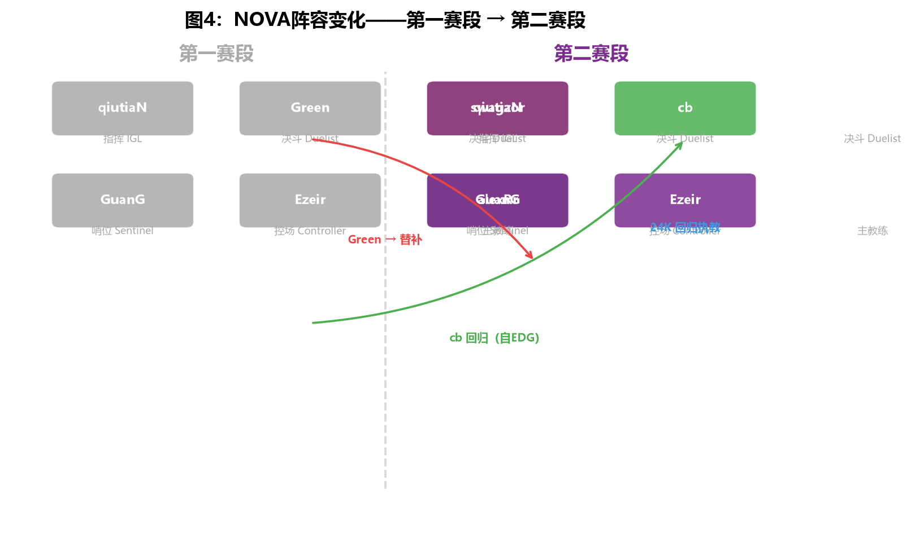
图4：NOVA阵容变化——第一赛段 vs 第二赛段（数据来源：vlr.gg/NOVA官方）
四、第二赛段：全胜之师
4.1 全胜战绩回顾
第二赛段常规赛，NOVA以全胜战绩（5胜0负）直接晋级季后赛。五场比赛的比分如下：
日期 对阵 比分 关键看点
7月12日 NOVA vs FPX 2:0 cb回归首秀 7月17日 NOVA vs JDG 2:1 雷兹+奇乐13:4碾压局 7月19日 NOVA vs TEC 2:1 逆转取胜 7月23日 NOVA vs EDG 2:0 swagzor MVP 7月24日 NOVA vs TYL 2:0 全胜锁定季后赛
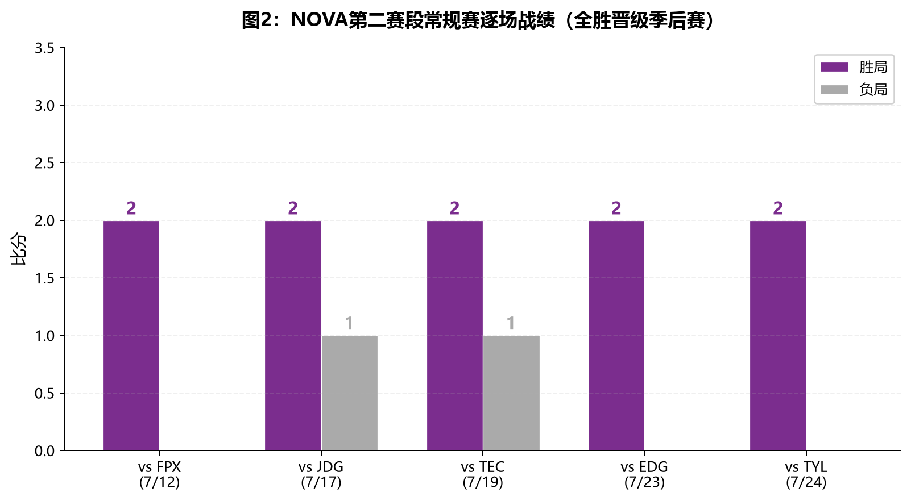
图2：NOVA第二赛段常规赛逐场战绩（全胜晋级季后赛，数据来源：VCT官方/5EPlay）
从1胜4负到5胜0负，胜率从20%飙升到100%。这不是渐进式的改善，而是断裂式的跃升。
4.2 swagzor的统治级表现
如果说NOVA的团队进步是"质变"，那swagzor的个人进步就是"蜕变"。第一赛段，他还是那个"有点紧张"的俄罗斯新人；第二赛段，他成为了联赛第二周的最佳选手，交出了令人瞠目的数据单：
数据指标 第一赛段 第二赛段 变化幅度
Rating ~0.95 1.66 +0.71 ACS ~210 286 +76 ADR ~145 219.2 +74.2 每回合击杀(KPR) ~0.72 0.98 +0.26
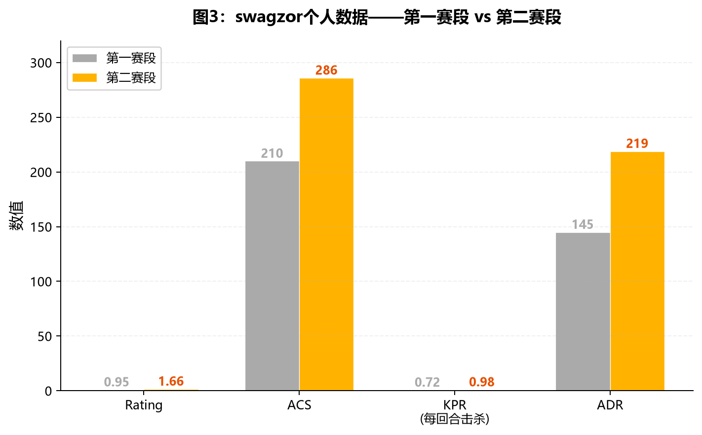
图3：swagzor个人数据——第一赛段 vs 第二赛段（数据来源：5EPlay/vlr.gg）
Rating从约0.95跃升至1.66，增幅近75%；ACS从约210飙升至286，已经进入联赛顶级选手的区间。5EPlay在周报中写道："如果没有Mikhail Vaniushin | swagzor，Nova绝不可能保持全胜。"——进化者杯的MVP经历，显然为swagzor卸下了"新人紧张"的心理包袱。
4.3 跨越EDG这座山
7月23日，NOVA以2:0击败EDG，这场比赛的意义远超一场常规赛胜利。EDG是VCT CN赛区的绝对霸主——2024年全球总冠军，2026年第一赛段CN赛区冠军，伦敦大师赛季军。用GuanG的话说："之前经常有人说EDG是VCT CN最高的山。"而NOVA不仅跨越了这座山，还打出了一场被24K教练形容为"真的打得像一个队伍，就是那种军队的感觉"的精彩对决。
赛后群访中，GuanG将MVP给到了qiutiaN："因为他今天指挥很好，非常棒。"——指挥质量的提升，是NOVA从"什么队伍都能输"到"什么队伍都能赢"的关键变量之一。24K教练则从另一个维度评价了这场胜利："我们今天其实有从上一场中吸取到一些经验，今天减少了很多失误。"——"减少失误"，正是第一赛段NOVA最致命的短板。
4.4 战术多样性
第二赛段的NOVA在阵容选择上展现了远超第一赛段的多样性。24K教练在对阵FPX后提到，他们在莲华古城上尝试过"非常多的阵容"，包括K/O+不死鸟+霓虹的双决斗体系、蝰蛇+钢锁的组合、以及最早的尚勃勒体系。在对阵JDG时，NOVA用雷兹搭配奇乐的阵容打出了13:4的碾压局。
这种战术储备的丰富度，与cb的多位置能力直接相关。当一名选手可以在先锋、哨位、决斗之间自如切换时，BP阶段的灵活度会指数级提升。而24K对NOVA体系历史的熟悉，也让他能快速调用过往的战术储备，而非从零开始搭建。
五、为什么NOVA进步了：五个变量
NOVA从第一赛段到第二赛段的进步，不是单一因素的结果，而是五个变量同时正向变化带来的叠加效应。
5.1 教练稳定性：从"水土不服"到"体系回归"
alexRr与24K的差距，不在于执教能力的绝对值，而在于"适配度"。24K了解NOVA的发展史、历史和原有体系，这意味着他不需要从零搭建战术框架，而是可以在既有基础上做增量优化。TP所说的"决策的稳定性"，指的正是教练对队伍特性的理解带来的决策一致性——同一套体系下，选手不需要在每场比赛中重新适应教练的思路。
5.2 cb的催化剂效应：从"团队型选手"到"窗户纸捅破者"
cb的回归不仅补强了个人火力，更重要的是他带来的认知升级。GuanG在赛后评价cb时说："他原来是太团队了。有时候打哨确实不能太团队了，因为有时候很容易一个上半场看不到人，该吸队友血还是得吸一下。现在整体调整过来还不错。"——这说明cb在EDG的经历，让他从一个"过度团队化"的选手，变成了一个懂得在团队配合和个人发挥之间找到平衡点的成熟选手。
此外，cb作为"EDG的优秀毕业生"（GuanG评价），还给NOVA带来了对枪层面的经验。当一支联赛中下游的队伍获得了一支冠军级队伍的训练方法和枪法理念时，这种"认知降维"的效应是巨大的。
5.3 swagzor的成长曲线：从"有点紧张"到"联赛最佳"
swagzor的蜕变遵循了一个经典的电竞新人成长曲线：融入期（第一赛段，紧张、磨合不足）→ 突破期（进化者杯夺冠，MVP，信心建立）→ 爆发期（第二赛段，Rating 1.66，联赛顶级）。进化者杯的MVP经历，是这个曲线上的关键拐点——它让swagzor从"证明自己配得上首发"的心态，切换到了"我就是这个联赛最好的选手之一"的心态。
5.4 进化者杯的信心积累：冠军是一种肌肉记忆
进化者杯决赛的让二追三逆转，给了NOVA一项第一赛段完全不具备的东西：逆境中赢球的经验。当一支队伍经历过0:2落后还能连扳三局的极限场景后，常规赛中2:1的焦灼局面就不再构成心理压力。qiutiaN所说的"赢比赛肯定会帮助我们很多"，指的正是这种"赢球的肌肉记忆"。
5.5 qiutiaN指挥成熟：从"也有点紧张"到"指挥很好，非常棒"
指挥（IGL）是一支队伍的大脑，其状态直接影响团队的决策质量。第一赛段，qiutiaN自己承认"也有点紧张"；第二赛段，他被队友GuanG评为MVP，原因是"指挥很好，非常棒"。这个变化的背后，是进化者杯冠军带来的信心、24K回归带来的战术支撑、以及cb回归带来的信息读取辅助——当队伍里有更多懂比赛的选手时，指挥的决策压力会相应降低。
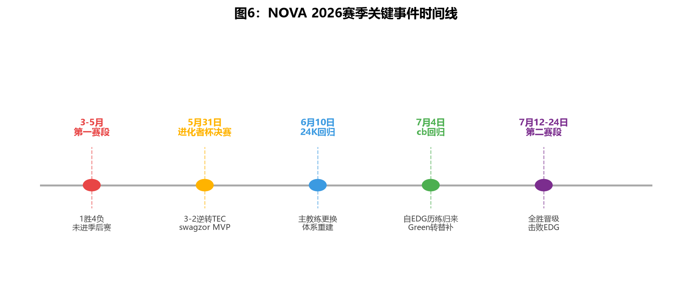
图6：NOVA 2026赛季关键事件时间线
六、展望：紫金能否成王朝
全胜晋级季后赛，是NOVA在2026赛季交出的最漂亮的一张答卷。但"紫金皇朝"四个字的分量，不是半个赛段的全胜就能承载的。
接下来的季后赛，是NOVA真正的成色检验。第一赛段他们未能晋级季后赛，意味着这支队伍在BO5/BO3的高压系列赛中经验严重不足。24K教练自己也很清醒："还是能看出来我们队伍缺了一些经验，在有一些临时情况发生的时候，我们没有做到特别好的选择，这就是我们进步的空间。"——全胜战绩很漂亮，但教练主动指出"缺经验"和"临时情况处理不足"，说明NOVA离真正的稳定强队还有距离。
cb的状态恢复也是一个变量。他自己承认："这一段时间我也挺迷茫的，三个月没打比赛了……然后刚回归，对自己的状态实力也不是那么自信。"虽然回归首秀就拿下了FPX，但cb的稳定性还需要更长的样本去验证。
更大的挑战在于，第二赛段的对手们会研究NOVA的战术体系。当雷兹+奇乐、K/O+不死鸟+霓虹这些阵容被对手摸透之后，NOVA是否能拿出新的牌？24K教练的战术储备是否足够深？这些问题，只有他们自己能够解决。
但无论如何，NOVA已经证明了一件事：在VCT CN赛区，一支联赛垫底的队伍，只要找到正确的教练、正确的人、正确的信心，就能在两个月内完成从谷底到巅峰的跨越。"紫金"不再只是一句口号——它已经是一种正在发生的可能。
至于这个可能能走多远，季后赛会给出答案。
参考来源
vlr.gg — VCT 2026 CN Stage 1 / Stage 2 赛事数据与选手统计
VCT官方赛事官网（vct.qq.com） — NOVA战队详情与比赛记录
5EPlay — "VCT CN第二赛段第二周：TYLOO、NOVA保持不败金身" / "让二追三！NOVA 3-2 逆转TEC斩获进化者杯第二幕总冠军"
虎扑（new.qq.com） — "Ezeir:这是2026年我们NOVA的首胜" / "NOVA教练:希望slowly能像进化者给我们来个大的" / "cb:在EDG我学到很多" / "全胜晋级季后赛,NOVA分享选手聚餐合照"
vlr.gg — "VCT26: CN Stage 2 Rosters Changes"（阵容变更追踪）
vlr.gg — "cb reunites with Nova Esports"
dvg.cn — "《无畏契约》cb重返NovaEsports-阵容调整与赛季展望"
VCT官方 — "JDG战胜TE,NOVA、TYL晋级季后赛！"
网易（163.com） — "Shocking Comeback: Nova Esports Survives TYLOO's Dominance to Claim Top Spot in VCT China 2026"